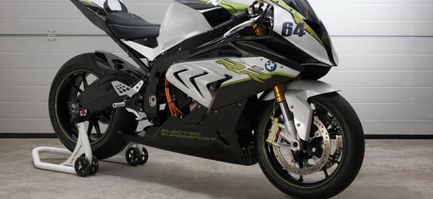

BMW Motorrad подготовил экспериментальную модель
В дополнение к двум основным цветам Light white и Racing red, доступным с момента запуска мотоцикла в производство, динамичный мотоцикл для путешествий также получит цветовую комбинацию Light white/Granite grey metallic/Racing red.
Спортивный цвет Racing red отражает спортивное ДНК BMW S 1000 XR, унаследованное от спортивных мотоциклов компании BMW. Насыщенный красный оттенок четко контрастирует с текстурированными матово-черными поверхностями. Цвет Light white придает спортивным качествам BMW S 1000 XR современные акценты. Фирменный белый цвет BMW Motorrad дополняется классическими элегантными деталями обтекателя черного цвета.
Новая цветовая комбинация Light white/Granite grey metallic/Racing red прекрасно совмещает характеристики обеих базовых конфигураций и придает облику S 1000 XR динамику и утонченность одновременно. В новой цветовой комбинации название модели больше не представлено по бокам обтекателя, оно переместилось на боковые поверхности топливного бака. Графические элементы гармонично продолжаются по всей длине мотоцикла и завершают концепцию новой цветовой комбинации.